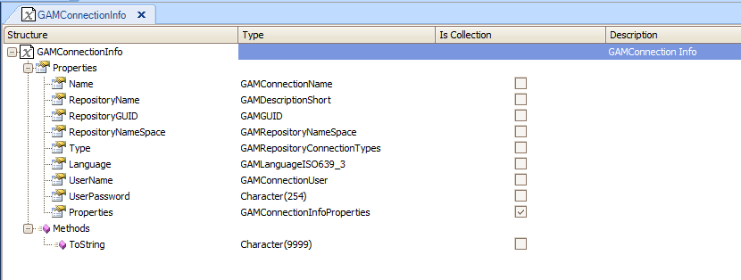

In some cases, it is useful to read the information of the connection.gam file programmatically in order to determine the GAM Repository Connection that is going to be used in the application.
In which case should I read the connection.gam file?
Remember that a GAM Repository Connection is used to establish a connection to the GAM database Repository every time the GAM API methods are used. The GAM Repository connection information is stored in the GAM database and also has to be set under connection.gam file, which has to be included in the server deployment.
Many connections can be included in connection.gam file; so, in some cases, the connection established to connect to the desired Repository has to be determined at runtime.
This is the scenario of multitenant applications, where the same executables are used for different companies and the connection.gam file includes a GAM connection for each Repository of each company. In this scenario, it's necessary to determine at runtime the GAM connection that has to be set depending on the company of the user who is logging in.
The GAM API provides methods to read the connection.gam file, get the GAM connection from it and set the GAM connection afterwards.
The GetConnections method of "GAM" external object allows loading, in a collection of GAMConnectionInfo, the information stored in the connection.gam file.
GAMConnectionInfo is a structured data type composed as follows:

See the GAMExampleLogin object where this method is used in the start event; note that in this case the first GAM connection found is used.
GAM.GetConnections(&ConnectionInfoCollection) //&ConnectionInfoCollection is a collection of GAMConnectionInfo data type If &ConnectionInfoCollection.Count > 0 and GAMRepository.GetId().IsEmpty() //The first connection found is established by default GAM.SetConnection(&ConnectionInfoCollection.Item(1).Name, &Errors) Else Do 'DisplayMessages' EndIf
The SetConnection method of "GAM" external object allows establishing the GAM Repository connection, so the application will use this connection to connect to the GAM Repository.
The method receives a parameter of char data type, which is the GAM Repository Connection name.
The code above shows an example where this method is used.
In multitenant applications, one possible implementation is to store the relationship UserId - CompanyId in a table of the application database.
When the user enters his credentials in the login object, you should retrieve the user's company from the database along with the Repository connection name which corresponds to that company. Using that information, then call the setconnection method before calling the login method.
In general, you would ask the user to enter other information in addition to the username; for example, the namespace from which you can infer the company he belongs to.
Another possibility is to ask the user to select the company name from a combo box, so the GAM Connection name can be inferred from this information.
Note: If a connection to the Repository is not set using the SetConnection method, GAM takes the first one of connection.gam file as the working Repository. If connection.gam includes only one Repository Connection, there's no need to use the SetConnection method (this is the case where there is a different installation for each company).
HowTo: Get GAM Repository connection information